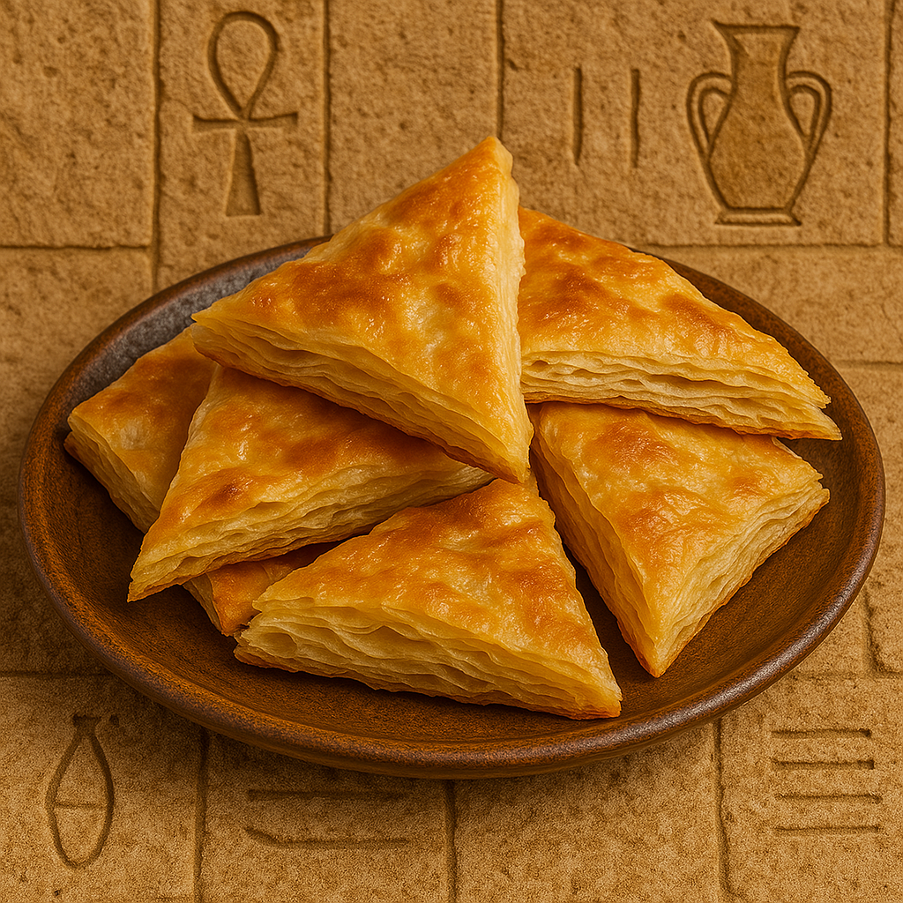

Layered Egyptian Pastry
Feteer Meshaltet is a traditional Egyptian pastry made of many thin layers of dough and butter, baked until flaky and golden. It can be served plain, sweet, or savory.
Ingredients:
- 4 cups all-purpose flour
- 2 cups warm water (approx.)
- 1/2 tsp salt
- 1 cup melted butter or ghee (for layering)
- Optional: honey, sugar, cheese, or cream for serving
Instructions:
- Mix flour, salt, and water to form a soft dough. Knead well and let it rest for 30 minutes.
- Divide into small balls. Roll each into a thin sheet on a greased surface.
- Brush with melted butter and fold layers over each other to form a thick disc.
- Place in a greased pan and bake at 220°C (425°F) until golden and crispy.
- Serve warm with honey, cheese, or powdered sugar.